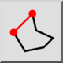

- Wählen Sie den gewünschten
Linientyp in der
Optionenwerkzeugleiste.
- Bestimmen Sie den Startpunkt des ersten Liniensegments mit der Maus oder
geben Sie eine Koordinate in die Kommandozeile ein.
- Bestimmen Sie den Endpunkt des ersten Liniensegments.
- Bestimmen Sie die Endpunkte aller zusätzlichen Liniensegmente. Klicken Sie
die 'Schliessen' Schaltfläche in der Optionenwerkzeugleiste, um die Sequenz zu
schliessen:

Um ein einzelnes Liniensegment zurückzunehmen, können sie die 'Zurück'
Schaltfläche klicken:
- Zusätzlich können Sie den Winkel oder die Länge der Linie einschränken auf
ein vielfaches eines vorgegebenen Winkels / einer vorgegebenen Länge.